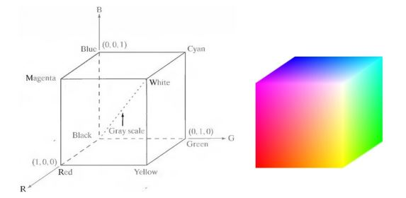

1. Color Model
RGB Color Model
RGB color model is combination of 3 channel Red, Green and Blue which's value are between 0 and 1.
In digital representation, the value of each channel depends on the bit depth. For example, the value is range from 0 to 255 with 8-bit depth unsigned image.

HSV
HSV is represented by Hue, Saturation and Value
- Hue: represents dominant color perceived by a observer. \(H=\begin{cases}\theta & if B \le G \\ 360 - \theta & if B > G \end{cases}\), where \(\theta = \cos^-1 \left(\frac{\frac{1}{2}((R-G) + (R -B))}{\sqrt{(R-G)^2 + (R-G)(G-B)}}\right)\)
- Saturation: represents the amount of white light mixed with Hue. \(S=1 - \frac{3}{R + G + B}(min(R, G, B))\)
- Value: represents the amount of intensity. \(V = \frac{(R + G + B)}{3}\)
To convert fro HSV to RGB
- If \(0^{\circ} \le H < 120^{\circ}\): \(B = V(1 - S)\), \(R = V\left(1 + \frac{S \cos H}{\cos(60^{\circ} - H)}\right)\), \(G = 3V - (R + B)\)
- If \(120^{\circ} \le H < 240^{\circ}\): \(H = H - 120^{\circ}\), \(B = V(1 - S)\), \(R = V\left(1 + \frac{S \cos H}{\cos(60^{\circ} - H)}\right)\), \(G = 3V - (R + B)\)
- If \(240^{\circ} \le H \le 360^{\circ}\): \(H = H - 240^{\circ}\), \(B = V(1 - S)\), \(R = V\left(1 + \frac{S \cos H}{\cos(60^{\circ} - H)}\right)\), \(G = 3V - (R + B)\)
2. Experiment
3. References